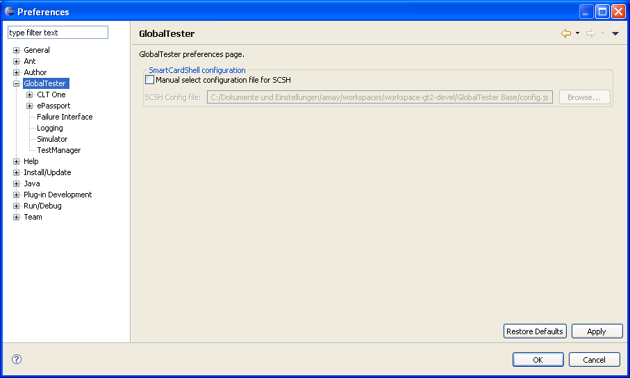

GlobalTester preferences
In the preferences dialog select GlobalTester
on the left. Now you will see general GlobalTester options on the right
hand side.

Here you can configure whether to use a special configuration file for
the SmartCardShell or not. If so you must give the location of your
configuration file.